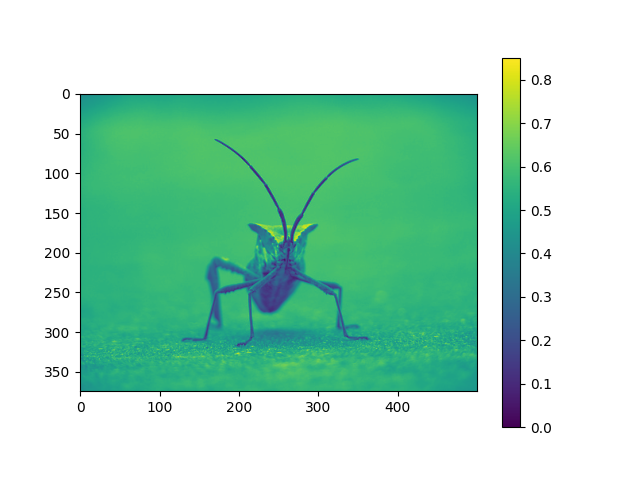

Note
Click here to download the full example code
Image tutorial¶
A short tutorial on plotting images with Matplotlib.
Startup commands¶
First, let's start IPython. It is a most excellent enhancement to the standard Python prompt, and it ties in especially well with Matplotlib. Start IPython either directly at a shell, or with the Jupyter Notebook (where IPython as a running kernel).
With IPython started, we now need to connect to a GUI event loop. This tells IPython where (and how) to display plots. To connect to a GUI loop, execute the %matplotlib magic at your IPython prompt. There's more detail on exactly what this does at IPython's documentation on GUI event loops.
If you're using Jupyter Notebook, the same commands are available, but people commonly use a specific argument to the %matplotlib magic:
In [1]: %matplotlib inline
This turns on inline plotting, where plot graphics will appear in your notebook. This has important implications for interactivity. For inline plotting, commands in cells below the cell that outputs a plot will not affect the plot. For example, changing the colormap is not possible from cells below the cell that creates a plot. However, for other backends, such as Qt, that open a separate window, cells below those that create the plot will change the plot - it is a live object in memory.
This tutorial will use Matplotlib's imperative-style plotting interface, pyplot. This interface maintains global state, and is very useful for quickly and easily experimenting with various plot settings. The alternative is the object-oriented interface, which is also very powerful, and generally more suitable for large application development. If you'd like to learn about the object-oriented interface, a great place to start is our Usage guide. For now, let's get on with the imperative-style approach:
import matplotlib.pyplot as plt
import matplotlib.image as mpimg
Importing image data into Numpy arrays¶
Matplotlib relies on the Pillow library to load image data.
Here's the image we're going to play with:

It's a 24-bit RGB PNG image (8 bits for each of R, G, B). Depending on where you get your data, the other kinds of image that you'll most likely encounter are RGBA images, which allow for transparency, or single-channel grayscale (luminosity) images. Download stinkbug.png to your computer for the rest of this tutorial.
{kind=link}
And here we go...
img = mpimg.imread('../../doc/_static/stinkbug.png')
print(img)
Out:
[[[0.40784314 0.40784314 0.40784314]
[0.40784314 0.40784314 0.40784314]
[0.40784314 0.40784314 0.40784314]
...
[0.42745098 0.42745098 0.42745098]
[0.42745098 0.42745098 0.42745098]
[0.42745098 0.42745098 0.42745098]]
[[0.4117647 0.4117647 0.4117647 ]
[0.4117647 0.4117647 0.4117647 ]
[0.4117647 0.4117647 0.4117647 ]
...
[0.42745098 0.42745098 0.42745098]
[0.42745098 0.42745098 0.42745098]
[0.42745098 0.42745098 0.42745098]]
[[0.41960785 0.41960785 0.41960785]
[0.41568628 0.41568628 0.41568628]
[0.41568628 0.41568628 0.41568628]
...
[0.43137255 0.43137255 0.43137255]
[0.43137255 0.43137255 0.43137255]
[0.43137255 0.43137255 0.43137255]]
...
[[0.4392157 0.4392157 0.4392157 ]
[0.43529412 0.43529412 0.43529412]
[0.43137255 0.43137255 0.43137255]
...
[0.45490196 0.45490196 0.45490196]
[0.4509804 0.4509804 0.4509804 ]
[0.4509804 0.4509804 0.4509804 ]]
[[0.44313726 0.44313726 0.44313726]
[0.44313726 0.44313726 0.44313726]
[0.4392157 0.4392157 0.4392157 ]
...
[0.4509804 0.4509804 0.4509804 ]
[0.44705883 0.44705883 0.44705883]
[0.44705883 0.44705883 0.44705883]]
[[0.44313726 0.44313726 0.44313726]
[0.4509804 0.4509804 0.4509804 ]
[0.4509804 0.4509804 0.4509804 ]
...
[0.44705883 0.44705883 0.44705883]
[0.44705883 0.44705883 0.44705883]
[0.44313726 0.44313726 0.44313726]]]
Note the dtype there - float32. Matplotlib has rescaled the 8 bit data from each channel to floating point data between 0.0 and 1.0. As a side note, the only datatype that Pillow can work with is uint8. Matplotlib plotting can handle float32 and uint8, but image reading/writing for any format other than PNG is limited to uint8 data. Why 8 bits? Most displays can only render 8 bits per channel worth of color gradation. Why can they only render 8 bits/channel? Because that's about all the human eye can see. More here (from a photography standpoint): Luminous Landscape bit depth tutorial.
Each inner list represents a pixel. Here, with an RGB image, there are 3 values. Since it's a black and white image, R, G, and B are all similar. An RGBA (where A is alpha, or transparency), has 4 values per inner list, and a simple luminance image just has one value (and is thus only a 2-D array, not a 3-D array). For RGB and RGBA images, Matplotlib supports float32 and uint8 data types. For grayscale, Matplotlib supports only float32. If your array data does not meet one of these descriptions, you need to rescale it.
Plotting numpy arrays as images¶
So, you have your data in a numpy array (either by importing it, or by
generating it). Let's render it. In Matplotlib, this is performed
using the imshow() function. Here we'll grab
the plot object. This object gives you an easy way to manipulate the
plot from the prompt.
imgplot = plt.imshow(img)
You can also plot any numpy array.
Applying pseudocolor schemes to image plots¶
Pseudocolor can be a useful tool for enhancing contrast and visualizing your data more easily. This is especially useful when making presentations of your data using projectors - their contrast is typically quite poor.
Pseudocolor is only relevant to single-channel, grayscale, luminosity images. We currently have an RGB image. Since R, G, and B are all similar (see for yourself above or in your data), we can just pick one channel of our data:
lum_img = img[:, :, 0]
# This is array slicing. You can read more in the `Numpy tutorial
# <https://numpy.org/doc/stable/user/quickstart.html>`_.
plt.imshow(lum_img)
Out:
<matplotlib.image.AxesImage object at 0x7f602084e530>
Now, with a luminosity (2D, no color) image, the default colormap (aka lookup table, LUT), is applied. The default is called viridis. There are plenty of others to choose from.
plt.imshow(lum_img, cmap="hot")
Out:
<matplotlib.image.AxesImage object at 0x7f6020821fc0>
Note that you can also change colormaps on existing plot objects using the
set_cmap() method:
imgplot = plt.imshow(lum_img)
imgplot.set_cmap('nipy_spectral')
Note
However, remember that in the Jupyter Notebook with the inline backend, you can't make changes to plots that have already been rendered. If you create imgplot here in one cell, you cannot call set_cmap() on it in a later cell and expect the earlier plot to change. Make sure that you enter these commands together in one cell. plt commands will not change plots from earlier cells.
There are many other colormap schemes available. See the list and images of the colormaps.
Color scale reference¶
It's helpful to have an idea of what value a color represents. We can do that by adding a color bar to your figure:
Out:
<matplotlib.colorbar.Colorbar object at 0x7f60109eaf20>
Examining a specific data range¶
Sometimes you want to enhance the contrast in your image, or expand
the contrast in a particular region while sacrificing the detail in
colors that don't vary much, or don't matter. A good tool to find
interesting regions is the histogram. To create a histogram of our
image data, we use the hist() function.
Out:
(array([2.000e+00, 2.000e+00, 3.000e+00, 3.000e+00, 2.000e+00, 2.000e+00,
3.000e+00, 1.000e+00, 7.000e+00, 9.000e+00, 7.000e+00, 2.000e+00,
7.000e+00, 1.000e+01, 1.100e+01, 1.500e+01, 1.400e+01, 2.700e+01,
2.100e+01, 2.400e+01, 1.400e+01, 3.100e+01, 2.900e+01, 2.800e+01,
2.400e+01, 2.400e+01, 4.000e+01, 2.600e+01, 5.200e+01, 3.900e+01,
5.700e+01, 4.600e+01, 8.400e+01, 7.600e+01, 8.900e+01, 8.000e+01,
1.060e+02, 1.130e+02, 1.120e+02, 9.000e+01, 1.160e+02, 1.090e+02,
1.270e+02, 1.350e+02, 9.800e+01, 1.310e+02, 1.230e+02, 1.110e+02,
1.230e+02, 1.160e+02, 1.010e+02, 1.170e+02, 1.000e+02, 1.010e+02,
9.000e+01, 1.060e+02, 1.260e+02, 1.040e+02, 1.070e+02, 1.110e+02,
1.380e+02, 1.000e+02, 1.340e+02, 1.210e+02, 1.400e+02, 1.320e+02,
1.390e+02, 1.160e+02, 1.330e+02, 1.180e+02, 1.080e+02, 1.170e+02,
1.280e+02, 1.200e+02, 1.210e+02, 1.100e+02, 1.160e+02, 1.180e+02,
9.700e+01, 9.700e+01, 1.140e+02, 1.070e+02, 1.170e+02, 8.700e+01,
1.070e+02, 9.800e+01, 1.040e+02, 1.120e+02, 1.110e+02, 1.180e+02,
1.240e+02, 1.340e+02, 1.200e+02, 1.410e+02, 1.520e+02, 1.360e+02,
1.610e+02, 1.380e+02, 1.620e+02, 1.570e+02, 1.350e+02, 1.470e+02,
1.690e+02, 1.710e+02, 1.820e+02, 1.980e+02, 1.970e+02, 2.060e+02,
2.160e+02, 2.460e+02, 2.210e+02, 2.520e+02, 2.890e+02, 3.450e+02,
3.620e+02, 3.760e+02, 4.480e+02, 4.630e+02, 5.170e+02, 6.000e+02,
6.200e+02, 6.410e+02, 7.440e+02, 7.120e+02, 8.330e+02, 9.290e+02,
1.061e+03, 1.280e+03, 1.340e+03, 1.638e+03, 1.740e+03, 1.953e+03,
2.151e+03, 2.290e+03, 2.440e+03, 2.758e+03, 2.896e+03, 3.384e+03,
4.332e+03, 5.584e+03, 6.197e+03, 6.422e+03, 6.404e+03, 7.181e+03,
8.196e+03, 7.968e+03, 7.474e+03, 7.926e+03, 8.460e+03, 8.091e+03,
9.148e+03, 8.563e+03, 6.747e+03, 6.074e+03, 6.328e+03, 5.291e+03,
6.472e+03, 6.268e+03, 2.864e+03, 3.760e+02, 1.620e+02, 1.180e+02,
1.270e+02, 9.500e+01, 7.600e+01, 8.200e+01, 6.200e+01, 6.700e+01,
5.600e+01, 5.900e+01, 4.000e+01, 4.200e+01, 3.000e+01, 3.400e+01,
3.200e+01, 4.300e+01, 4.200e+01, 2.300e+01, 2.800e+01, 1.900e+01,
2.200e+01, 1.600e+01, 1.200e+01, 1.800e+01, 9.000e+00, 1.000e+01,
1.700e+01, 5.000e+00, 2.100e+01, 1.300e+01, 8.000e+00, 1.200e+01,
1.000e+01, 8.000e+00, 8.000e+00, 5.000e+00, 1.300e+01, 6.000e+00,
3.000e+00, 7.000e+00, 6.000e+00, 2.000e+00, 1.000e+00, 5.000e+00,
3.000e+00, 3.000e+00, 1.000e+00, 1.000e+00, 1.000e+00, 5.000e+00,
0.000e+00, 1.000e+00, 3.000e+00, 0.000e+00, 1.000e+00, 1.000e+00,
2.000e+00, 1.000e+00, 0.000e+00, 0.000e+00, 0.000e+00, 0.000e+00,
0.000e+00, 0.000e+00, 0.000e+00, 0.000e+00, 0.000e+00, 0.000e+00,
0.000e+00, 0.000e+00, 0.000e+00, 0.000e+00, 0.000e+00, 0.000e+00,
0.000e+00, 0.000e+00, 0.000e+00, 0.000e+00, 0.000e+00, 0.000e+00,
0.000e+00, 0.000e+00, 0.000e+00, 0.000e+00, 0.000e+00, 0.000e+00,
0.000e+00, 0.000e+00, 0.000e+00, 0.000e+00, 0.000e+00, 0.000e+00,
0.000e+00, 0.000e+00, 0.000e+00, 0.000e+00]), array([0. , 0.00390625, 0.0078125 , 0.01171875, 0.015625 ,
0.01953125, 0.0234375 , 0.02734375, 0.03125 , 0.03515625,
0.0390625 , 0.04296875, 0.046875 , 0.05078125, 0.0546875 ,
0.05859375, 0.0625 , 0.06640625, 0.0703125 , 0.07421875,
0.078125 , 0.08203125, 0.0859375 , 0.08984375, 0.09375 ,
0.09765625, 0.1015625 , 0.10546875, 0.109375 , 0.11328125,
0.1171875 , 0.12109375, 0.125 , 0.12890625, 0.1328125 ,
0.13671875, 0.140625 , 0.14453125, 0.1484375 , 0.15234375,
0.15625 , 0.16015625, 0.1640625 , 0.16796875, 0.171875 ,
0.17578125, 0.1796875 , 0.18359375, 0.1875 , 0.19140625,
0.1953125 , 0.19921875, 0.203125 , 0.20703125, 0.2109375 ,
0.21484375, 0.21875 , 0.22265625, 0.2265625 , 0.23046875,
0.234375 , 0.23828125, 0.2421875 , 0.24609375, 0.25 ,
0.25390625, 0.2578125 , 0.26171875, 0.265625 , 0.26953125,
0.2734375 , 0.27734375, 0.28125 , 0.28515625, 0.2890625 ,
0.29296875, 0.296875 , 0.30078125, 0.3046875 , 0.30859375,
0.3125 , 0.31640625, 0.3203125 , 0.32421875, 0.328125 ,
0.33203125, 0.3359375 , 0.33984375, 0.34375 , 0.34765625,
0.3515625 , 0.35546875, 0.359375 , 0.36328125, 0.3671875 ,
0.37109375, 0.375 , 0.37890625, 0.3828125 , 0.38671875,
0.390625 , 0.39453125, 0.3984375 , 0.40234375, 0.40625 ,
0.41015625, 0.4140625 , 0.41796875, 0.421875 , 0.42578125,
0.4296875 , 0.43359375, 0.4375 , 0.44140625, 0.4453125 ,
0.44921875, 0.453125 , 0.45703125, 0.4609375 , 0.46484375,
0.46875 , 0.47265625, 0.4765625 , 0.48046875, 0.484375 ,
0.48828125, 0.4921875 , 0.49609375, 0.5 , 0.50390625,
0.5078125 , 0.51171875, 0.515625 , 0.51953125, 0.5234375 ,
0.52734375, 0.53125 , 0.53515625, 0.5390625 , 0.54296875,
0.546875 , 0.55078125, 0.5546875 , 0.55859375, 0.5625 ,
0.56640625, 0.5703125 , 0.57421875, 0.578125 , 0.58203125,
0.5859375 , 0.58984375, 0.59375 , 0.59765625, 0.6015625 ,
0.60546875, 0.609375 , 0.61328125, 0.6171875 , 0.62109375,
0.625 , 0.62890625, 0.6328125 , 0.63671875, 0.640625 ,
0.64453125, 0.6484375 , 0.65234375, 0.65625 , 0.66015625,
0.6640625 , 0.66796875, 0.671875 , 0.67578125, 0.6796875 ,
0.68359375, 0.6875 , 0.69140625, 0.6953125 , 0.69921875,
0.703125 , 0.70703125, 0.7109375 , 0.71484375, 0.71875 ,
0.72265625, 0.7265625 , 0.73046875, 0.734375 , 0.73828125,
0.7421875 , 0.74609375, 0.75 , 0.75390625, 0.7578125 ,
0.76171875, 0.765625 , 0.76953125, 0.7734375 , 0.77734375,
0.78125 , 0.78515625, 0.7890625 , 0.79296875, 0.796875 ,
0.80078125, 0.8046875 , 0.80859375, 0.8125 , 0.81640625,
0.8203125 , 0.82421875, 0.828125 , 0.83203125, 0.8359375 ,
0.83984375, 0.84375 , 0.84765625, 0.8515625 , 0.85546875,
0.859375 , 0.86328125, 0.8671875 , 0.87109375, 0.875 ,
0.87890625, 0.8828125 , 0.88671875, 0.890625 , 0.89453125,
0.8984375 , 0.90234375, 0.90625 , 0.91015625, 0.9140625 ,
0.91796875, 0.921875 , 0.92578125, 0.9296875 , 0.93359375,
0.9375 , 0.94140625, 0.9453125 , 0.94921875, 0.953125 ,
0.95703125, 0.9609375 , 0.96484375, 0.96875 , 0.97265625,
0.9765625 , 0.98046875, 0.984375 , 0.98828125, 0.9921875 ,
0.99609375, 1. ], dtype=float32), <BarContainer object of 256 artists>)
Most often, the "interesting" part of the image is around the peak,
and you can get extra contrast by clipping the regions above and/or
below the peak. In our histogram, it looks like there's not much
useful information in the high end (not many white things in the
image). Let's adjust the upper limit, so that we effectively "zoom in
on" part of the histogram. We do this by passing the clim argument to
imshow. You could also do this by calling the
set_clim() method of the image plot
object, but make sure that you do so in the same cell as your plot
command when working with the Jupyter Notebook - it will not change
plots from earlier cells.
You can specify the clim in the call to plot.
imgplot = plt.imshow(lum_img, clim=(0.0, 0.7))
You can also specify the clim using the returned object
fig = plt.figure()
ax = fig.add_subplot(1, 2, 1)
imgplot = plt.imshow(lum_img)
ax.set_title('Before')
plt.colorbar(ticks=[0.1, 0.3, 0.5, 0.7], orientation='horizontal')
ax = fig.add_subplot(1, 2, 2)
imgplot = plt.imshow(lum_img)
imgplot.set_clim(0.0, 0.7)
ax.set_title('After')
plt.colorbar(ticks=[0.1, 0.3, 0.5, 0.7], orientation='horizontal')
Out:
<matplotlib.colorbar.Colorbar object at 0x7f602146b8b0>
Array Interpolation schemes¶
Interpolation calculates what the color or value of a pixel "should" be, according to different mathematical schemes. One common place that this happens is when you resize an image. The number of pixels change, but you want the same information. Since pixels are discrete, there's missing space. Interpolation is how you fill that space. This is why your images sometimes come out looking pixelated when you blow them up. The effect is more pronounced when the difference between the original image and the expanded image is greater. Let's take our image and shrink it. We're effectively discarding pixels, only keeping a select few. Now when we plot it, that data gets blown up to the size on your screen. The old pixels aren't there anymore, and the computer has to draw in pixels to fill that space.
We'll use the Pillow library that we used to load the image also to resize the image.
from PIL import Image
img = Image.open('../../doc/_static/stinkbug.png')
img.thumbnail((64, 64), Image.ANTIALIAS) # resizes image in-place
imgplot = plt.imshow(img)
Out:
/home/elliott/code/matplotlib-3.5.x/tutorials/introductory/images.py:248: DeprecationWarning: ANTIALIAS is deprecated and will be removed in Pillow 10 (2023-07-01). Use Resampling.LANCZOS instead.
img.thumbnail((64, 64), Image.ANTIALIAS) # resizes image in-place
Here we have the default interpolation, bilinear, since we did not
give imshow() any interpolation argument.
Let's try some others. Here's "nearest", which does no interpolation.
imgplot = plt.imshow(img, interpolation="nearest")

and bicubic:
imgplot = plt.imshow(img, interpolation="bicubic")
Bicubic interpolation is often used when blowing up photos - people tend to prefer blurry over pixelated.
Total running time of the script: ( 0 minutes 8.585 seconds)
Keywords: matplotlib code example, codex, python plot, pyplot Gallery generated by Sphinx-Gallery